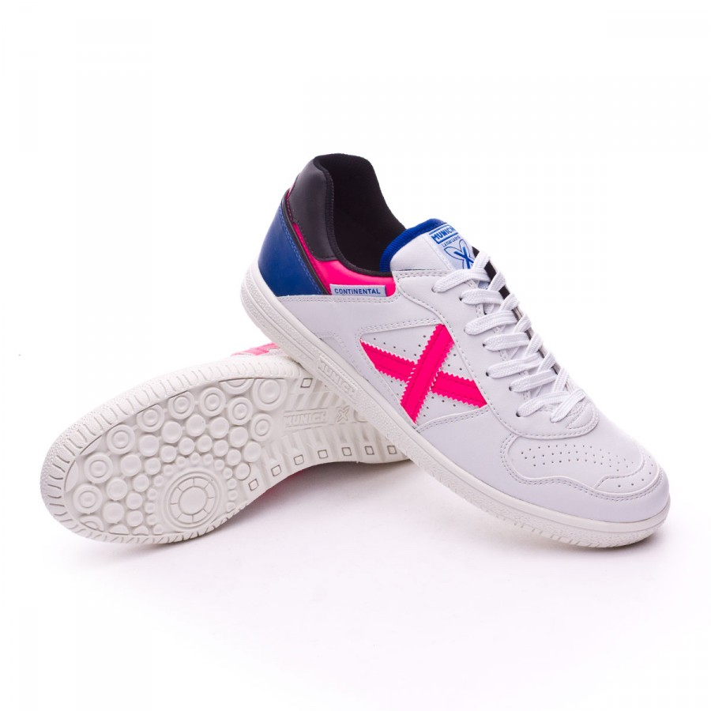

Munich Continental |
Información:Fabricado en piel natural que le da un tacto muy suave. El interior de la zapatilla esta realizado con un material acolchado para que sea más confortable. Su diseño sin costuras nos da una gran superficie de contacto con el balón lo que favorece al golpeo y lo hacen mas preciso Vemos dos zonas diferenciadas, la delantera donde su diseño de estrías en forma redondeado favorecen a cualquier movimiento sin perder agarre y ante cualquier tipo de apoyo Suela vulcanizada, incorpora una entresuela realizada en dos densidades que aporta comodidad en los apoyos reforzando las zonas de mayor impacto para la planta del pie, además de darle mayor dureza a aquellas zonas de mayor desgaste Por su diseño y los materiales con los que esta realizada se aconseja su uso para pistas de interior (indor) de cualquier material aunque donde dan su mejor rendimiento es sobre parquet Precio: |
|---|